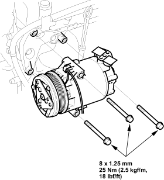

- If the compressor is marginally operable, run the engine at idle speed and let the air conditioning work for a few minutes, then shut the engine off.
- Make sure you have the anti-theft code for the radio, then write down the frequencies for the radio's preset buttons.
- Disconnect the negative cable from the battery.
- Discharge the refrigerant.
- Remove the bolts, then disconnect the suction line (A) and the discharge line (B) from the compressor. Plug or cap the lines immediately after disconnecting them to avoid moisture and dust contamination.

- Remove the mounting bolts and the compressor.

- Install the compressor in the reverse order of removal and note these items:
If you are installing a new compressor, you must calculate the amount of refrigerant oil to be removed from it (see page 21-7).
- Replace the O-rings with new ones at each fitting and apply a thin coat of refrigerant oil before installing them. Be sure to use the right O-rings for HFC-134a (R-134a) to avoid leakage.
- Use refrigerant oil (DELPHI DH-PS) for HFC-134a DELPHI compressor only.
- To avoid contamination, do not return the oil to the container once dispensed and never mix it with other refrigerant oils.
- Immediately after using the oil, reinstall the cap on the container and seal it to avoid moisture absorption.
- Do not spill the refrigerant oil on the vehicle; it may damage the paint; if the refrigerant oil contacts the paint, wash it off immediately.
- Charge the system.
- Check for system performance (see page 21-30).
- Enter the anti-theft code for the radio, then enter the customer's radio station presets.